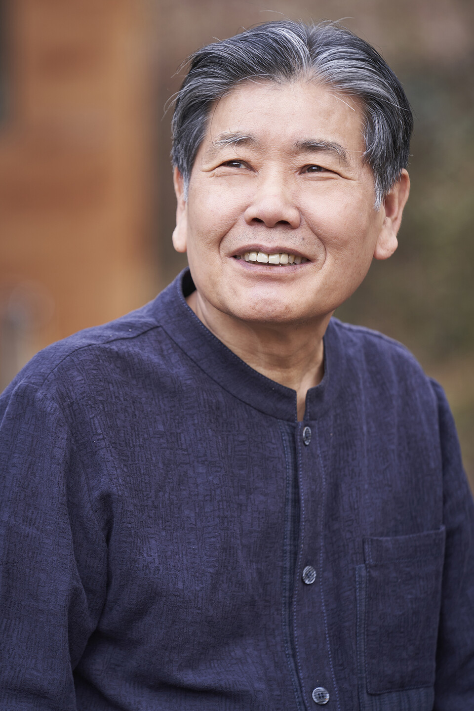

Jeong Chanju
정찬주 · 鄭燦柱
Dharma name: Muyeom (無染) — "Unstained"
Jeong Chanju is one of Korea's most distinguished Buddhist novelists—a writer who has spent over four decades chronicling the spiritual masters and contemplative traditions that form the bedrock of Korean identity. His body of work, more than one hundred novels and essay collections, represents an extraordinary literary pilgrimage through Korea's Buddhist heritage.
Born in 1953 in Boseong, in the green tea country of South Jeolla Province, Jeong studied Korean literature at Dongguk University, Korea's foremost Buddhist institution. After a brief period teaching at Sangmyeong Girls' High School in Seoul, he found his calling in Buddhist publishing—first at Buddhist Thought magazine, then for more than a decade at Saemteo Publishing, where a fateful encounter would shape the rest of his life.
The Teacher
At Saemteo, Jeong became the editor responsible for the books of Venerable Beopjeong (법정스님, 1932–2010), the beloved monk whose philosophy of musoyu—non-possession—touched millions of Korean readers. Their relationship deepened from professional collaboration into spiritual discipleship.
In 1991, Jeong made his first pilgrimage to Bulilam, Beopjeong's remote hermitage at Songgwangsa temple. There, the monk accepted him as a lay disciple and bestowed upon him the dharma name Muyeom (無染), meaning "unstained."
He would later write Novel Musoyu, the definitive biography of his teacher, which has sold over 300,000 copies. After Beopjeong's death in 2010, Jeong published My Last Teacher, a personal memoir of their twenty years together.
The Hermitage
In 2002, after raising his children, Jeong left Seoul and built a small mountain retreat called Ibuljae (耳佛齋, "Hermitage of the Ear of Buddha") on the slopes of Gyedang Mountain in Hwasun, South Jeolla Province—a withdrawal from urban life that echoes the ancient tradition of forest-dwelling in one's later years.
There, surrounded by the green mountains that cradle the ancient temples he has spent a lifetime visiting, Jeong tends a vegetable garden and devotes himself entirely to writing.
It is from Ibuljae that he wrote this novel—a meditation on friendship, music, silence, and the Korean concept of jeong that transcends cultural boundaries.
Selected Works
Mountains Are Mountains, Water Is Water
산은 산 물은 물
The life of Master Seongcheol (1912–1993), one of Korea's most influential Zen masters, whose famous teaching gave the novel its title.
Novel Musoyu
소설 무소유
The definitive biography of Venerable Beopjeong, tracing how a young man became Korea's beloved apostle of non-possession. Over 300,000 copies sold.
The Road to the Hermitage
암자로 가는 길
A three-volume pilgrimage to over 400 Korean hermitages—the contemplative essays that earned Jeong the title "Writer of the Hermitages."
Seven Years of Yi Sun-sin
이순신의 7년
A seven-volume historical epic of Admiral Yi Sun-sin's campaigns during the Imjin War. Ten years in the making.
Moon Reflected in a Thousand Rivers
천강에 비친 달
A novel exploring Korean Buddhist history and the transmission of dharma across generations, like moonlight reflected in countless streams.
Gwangju Arirang
광주 아리랑
A docu-novel of the May 18th Gwangju Uprising (1980), told through the eyes of ordinary citizens. Published in English 2025.
Montafon Moonlight
몬타폰의 달빛
A meditation on friendship, music, and jeong, set in the Austrian Alps. Currently being translated into English.
Life & Career
- 1953 Born in Boseong, South Jeolla Province—the heart of Korea's green tea country
- 1970s Studies Korean Literature at Dongguk University, Seoul
- 1983 Literary debut with the Korean Literature New Writer Award
- 1980s–90s Editor at Saemteo Publishing; becomes Beopjeong's editor and lay disciple
- 1991 Receives dharma name Muyeom from Venerable Beopjeong at Bulilam hermitage, Songgwangsa
- 1997 Publishes The Road to the Hermitage, beginning a decade of hermitage pilgrimages
- 2002 Leaves Seoul; builds Ibuljae hermitage in Hwasun
- 2015 First journey to Austria; meets composer Herbert Willi in the Montafon Valley
- 2018 Completes Seven Years of Yi Sun-sin after a decade of research
- 2024–25 Serializes Montafon Moonlight on Media Buddha
- 2025 Montafon Moonlight English translation begins (following Gwangju Arirang, published in English 2025)
Recognition
- 1983 Korean Literature New Writer Award
- 1996 Haengwon Literary Prize (행원문학상)
- 2010 Dongguk Literary Prize (동국문학상)
- — Hwajung Culture Grand Prize
- — Ryu Juhyeon Literary Prize
- — Yusim Works Award for King Ashoka
The Montafon Connection
In 2015, at the invitation of Chairwoman Sonja Steindl-Kwon, Jeong traveled to Austria to lecture on Buddhism and Korean spirituality. In the alpine village of Sankt Anton im Montafon, he met the composer Herbert Willi—and discovered a kindred spirit. Both men had built their lives around silence: Willi wandering the mountains to capture the sounds of birds and water, Jeong walking the paths to Korea's hidden hermitages.
Their conversations—about music, meditation, nature, and the ineffable concept of jeong—became the heart of this novel. In 2024, Willi premiered DSONG at the Bregenz Festival—a 40-minute orchestral meditation on the Korean symbol for togetherness and peace, inspired by his friendship with Jeong.
— Herbert Willi, Montafon Moonlight, Chapter 13